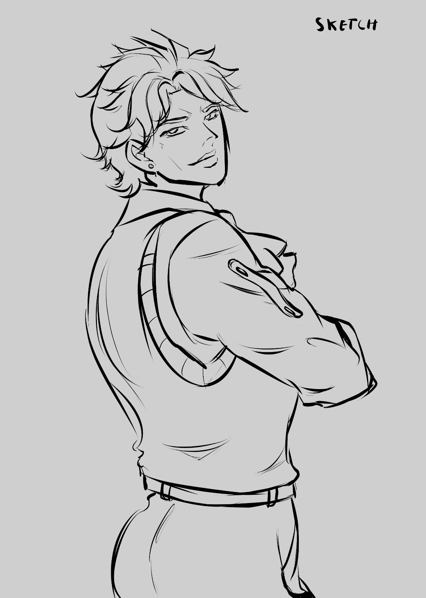
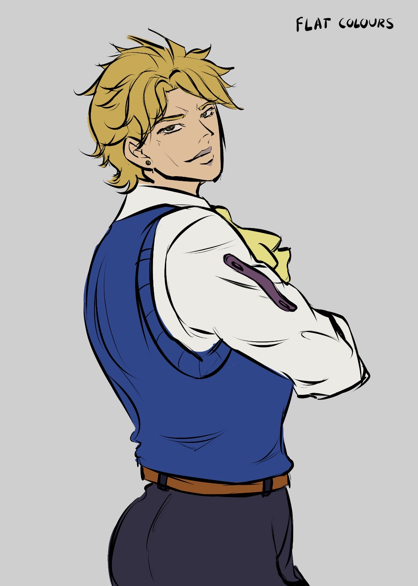
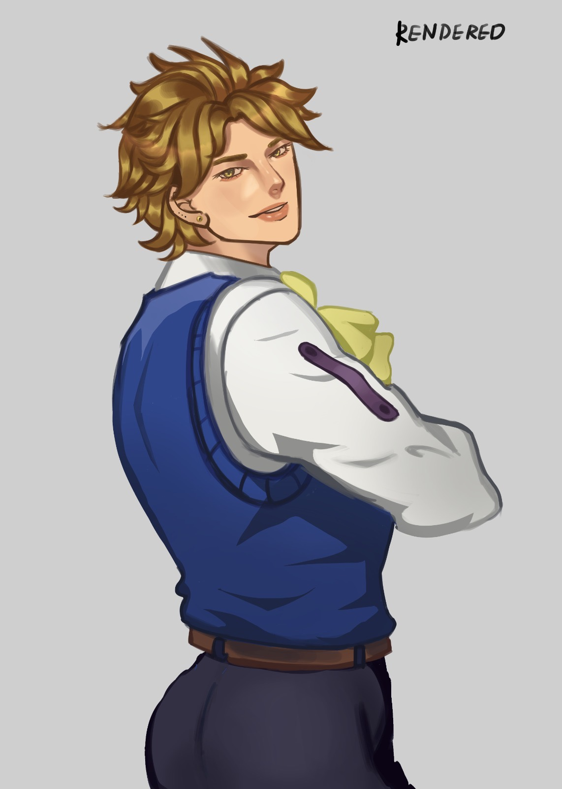
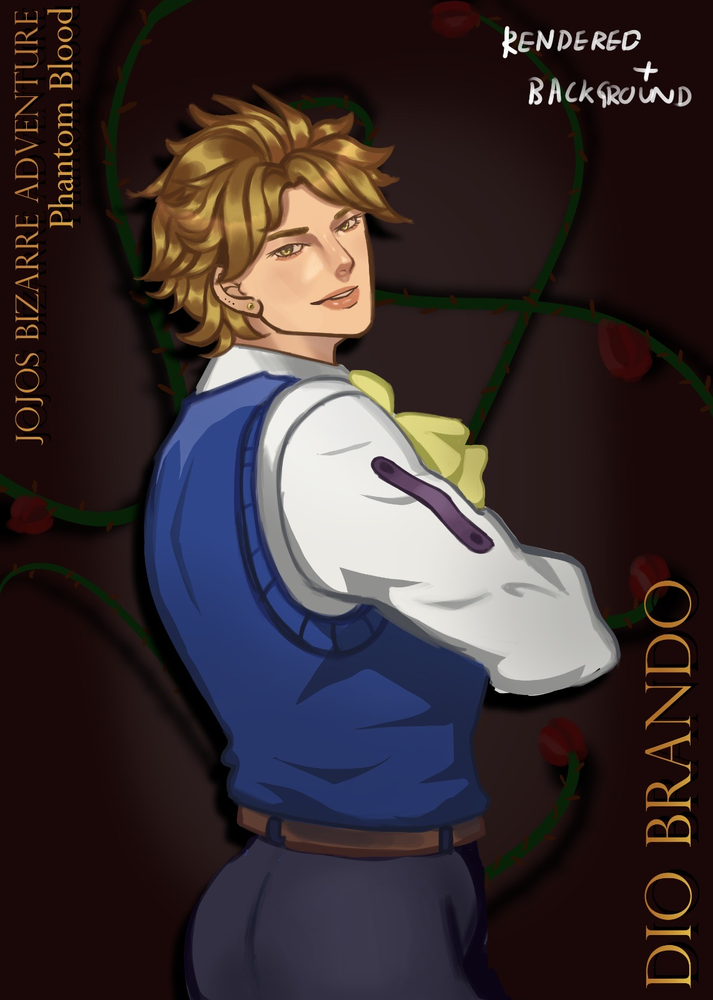

01 · FOUNDATION
Sketch
The composition, pose and main forms are established before colour or rendering.

SKETCH · FLATS · RENDER · FINAL
One illustration carried through four stages, showing construction, colour blocking, rendering and final polish.
01 · FOUNDATION
The composition, pose and main forms are established before colour or rendering.

02 · COLOUR
Local colours are blocked in to separate forms and establish the palette before lighting and detail.

03 · DEPTH
Lighting, form, texture and detail are developed to push the piece toward its finished look.

04 · POLISH
The completed illustration after final adjustments, colour refinement and finishing touches.
